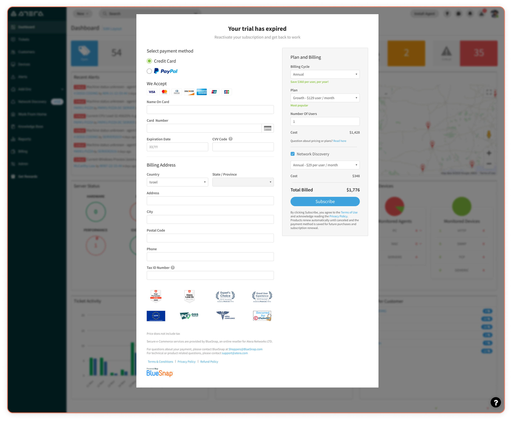
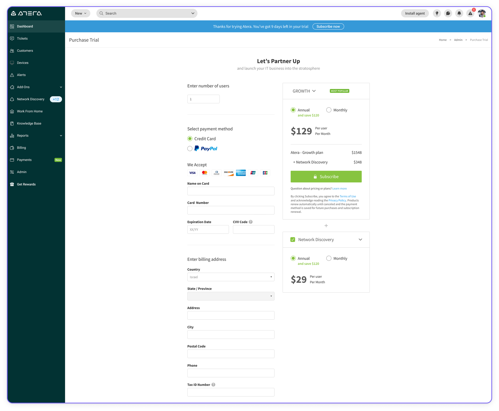
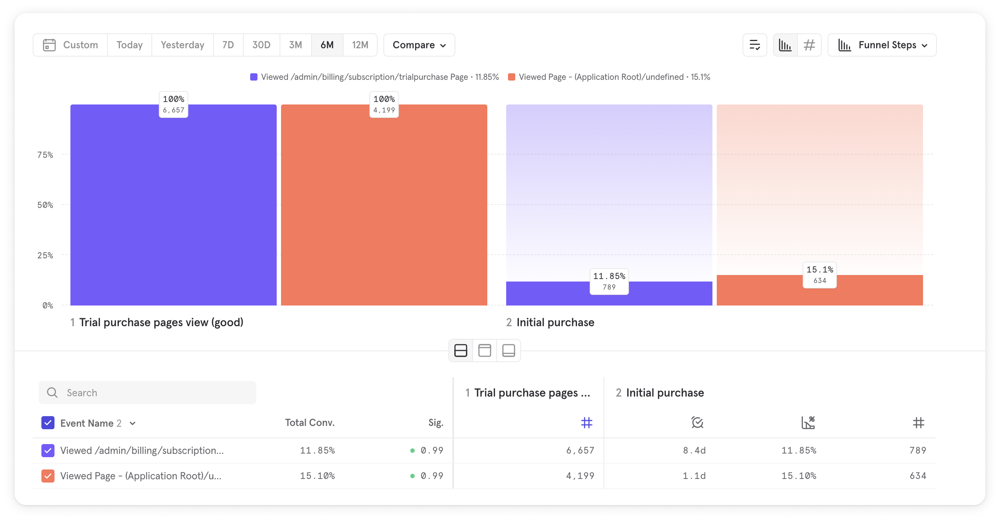
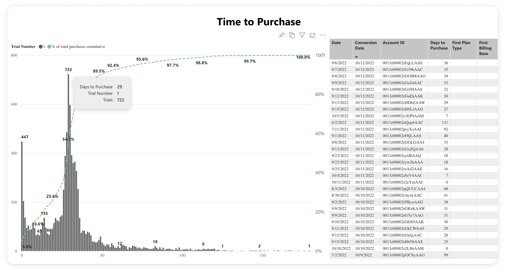
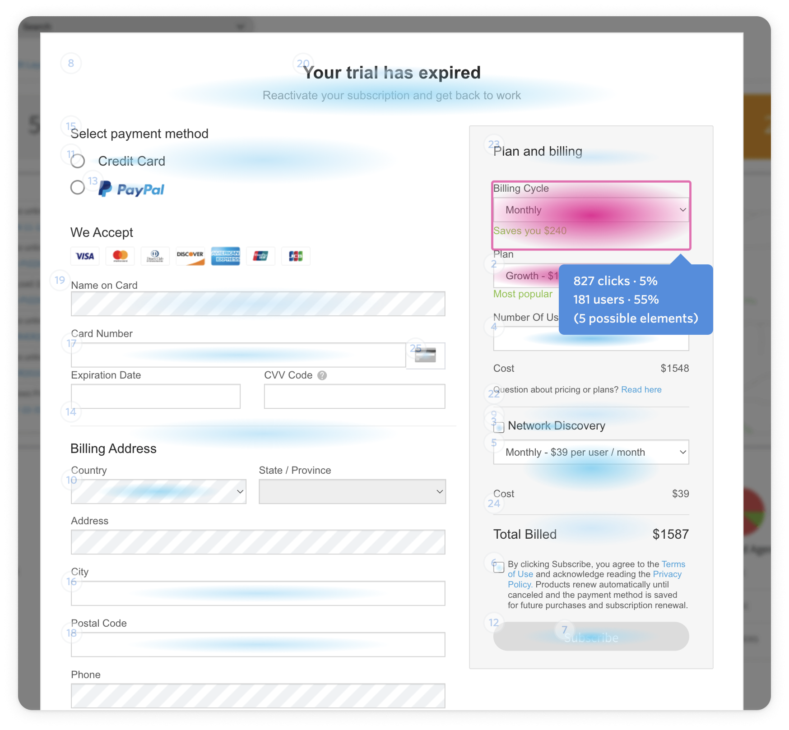
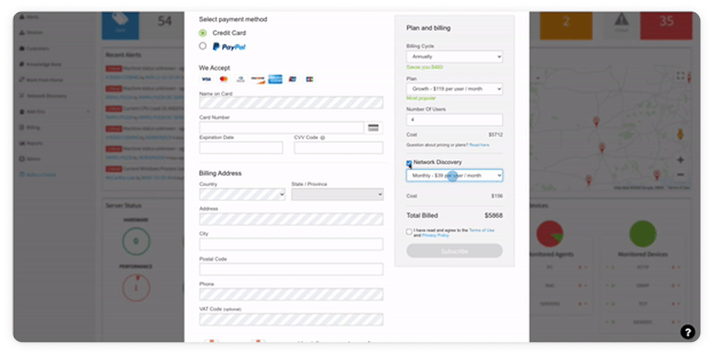
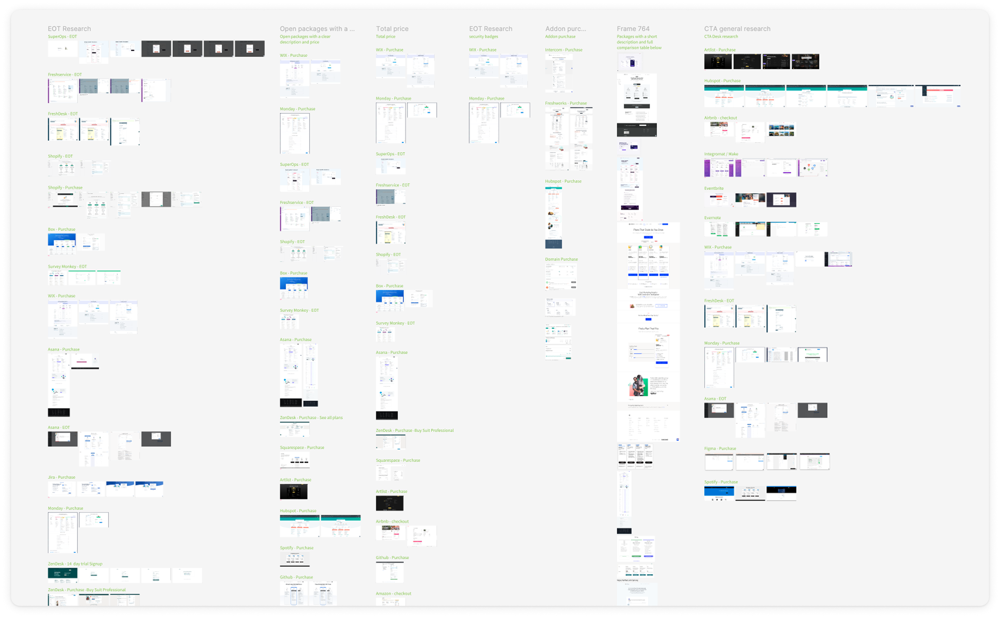
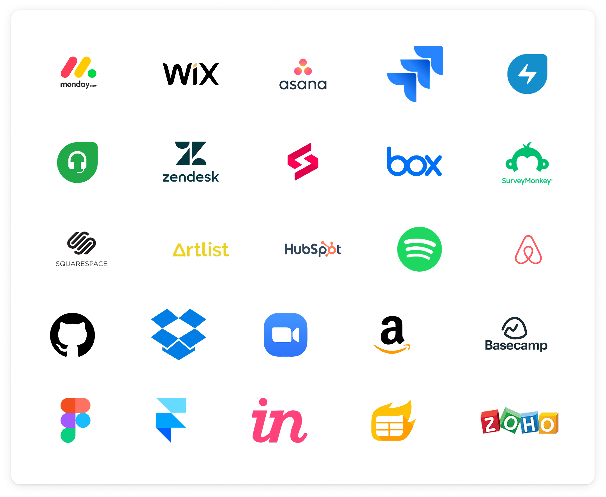
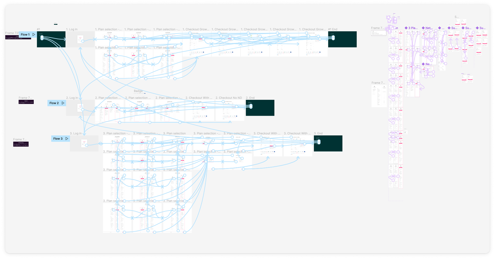

About
Redesigning the purchase pages of Atera
Atera is a SaaS management platform used by IT professionals. As the product designer in the billing and subscription squad, I led the project. My work included investigating the data, desk research, prototyping, working with the product researcher, and of course designing the purchase page based on the results of the study.
Contents
- The current state of the purchase pages
- Project kick off
- User testing
- Design suggestion
The Current Situation
End Of Trial Purchase Page
Atera has a zero touch purchase model. That is, users create an account and get access to the software for 30 days. After their trial has ended when logging in, the users see the End Of Trial purchase page.

Trial Purchase Page
During the trial the user can purchase the software at any time.

Project's Kickoff
The purchase pages were written in aspx technology and didn't behave as part of the Atera platform. This caused quite a few issues and was decided as a tech debt to rewrite the page. Rewriting the page gave us the opportunity to redesign it.
However
- We had very little data gathering abilities for these pages.
- Since the context of the project was a tech debt, we didn't have the capacity to properly A/B test.
The Data We Did Have
Purchase Pages Conversion Rate
In the below image we can see users who viewed the purchase page and how many of them actually purchased. The purple represents the Trial purchase page. The red represents the End Of Trial purchase page.

When Do Users Purchase?
In the below image we can see that most of the users purchase on day 29 of their trial. The general assumption is that they do that to maximize their trial period. However, there are quite a few who purchase the day after — when their trial expires — and then there's a "tail" of purchases following.

Clicks Heat Map from FullStory
We can see here that most of the engagement takes place on the right side of the page. I assume that users would interact with that area to understand what the purchase will cost them.

UX Issue

Let's say you're going shopping. What would the experience feel like if the salesman kept asking you if you want to pay?
In our case the required credentials are stuck in front of the user's face throughout the whole purchase process. This is kind of what's happening above — the user customizes the plan, then naturally clicks on the subscribe button, but forgot to input their credentials first.
Desk Research
Next step — desk research
To gain a better understanding of the industry's standards and best practices I set out on a journey of inspecting various purchase pages from different SaaS companies.

Platforms Researched
I looked at end of trial, purchase and pricing pages across 15+ SaaS companies.

What We Understood
- It makes sense to split the process into two digestible steps.
- We should present the contents of each plan.
- We need a clear summary to show the user what they're buying.
However, we still had open questions
Three of them to be precise:
How to present the contents of each plan? (all the features? Expand / collapse? All the previous plus? etc.)
Part of the purchase process in Atera is selecting Network Discovery, an add-on that can be purchased in addition to the Atera subscription. Should it be on the main page or its own step?
How should billing cycle selection be handled across both the plan and Network Discovery?
Our goal was to answer those questions and bring confidence to our design suggestions.
User Testing
Research Context
We consulted with a product researcher — Danielle Jaffit, an external consultant for the company. We decided to test 3 clickable prototypes with users to determine which journey is clearest. We talked to:
- 10 users who have recently purchased
- Half who purchased Network Discovery and half that didn't

Research Limitations
Users used this as a proxy support call. Makes sense — they recently purchased the product.
The 3 Tests
- Short
- All in one
- Network Discovery as a separate step
Here's what each looked like: